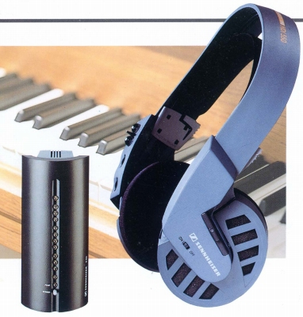

IS-550

■価格 45,000円■型式 ダイナミック型オープンエアタイプ■振動板 ■インピーダンス ■再生周波数帯域 18-24,000Hz■許容入力 ■感度 ■コード ■重量 170g （本体）160ｇ（送信機）■発売 1993年■販売終了 1995〜96年頃■備考 歪率 ＜0.8％ 変調方式 ＦＭ 送信機側接続プラグ 3.5/6.3mm 本体型式 HDI-550 送信機型式 S-550
ゼンハイザーのインデックスへ